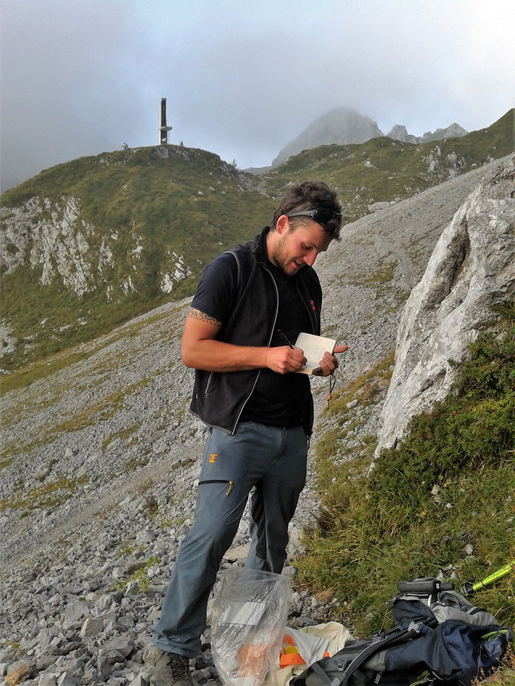
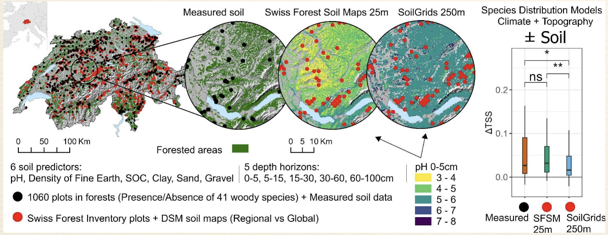
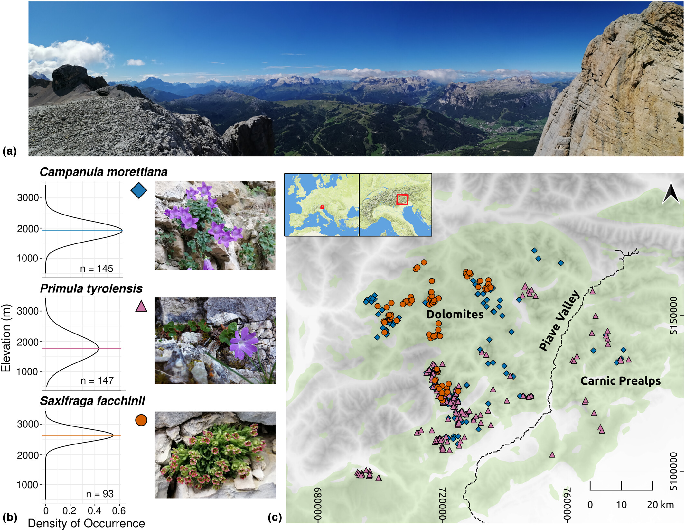

Chi Sono
Sono uno scienziato naturale con PhD specializzato in botanica, ecologia, GIS e Data Science. Ecologo quantitativo con oltre 7 anni di esperienza nell'applicazione dell'analisi spaziale e della scienza dei dati alla ricerca ecologica e alla conservazione. Competenze specialistiche in GIS, modellizzazione statistica e monitoraggio a lungo termine della vegetazione, con particolare attenzione agli ecosistemi alpini e forestali. Background interdisciplinare che spazia dai cambiamenti climatici alla gestione e conservazione della biodiversità, dalla genomica delle popolazioni alle interazioni pianta-suolo e al ripristino degli ecosistemi.
Appassionato di natura, la esploro attraverso il trekking, l'arrampicata e la speleologia.
About Me
I am a natural scientist with PhD specializing in botany, ecology, GIS, and data science. Quantitative Ecologist with several years of experience applying spatial analysis and data science to ecological research and conservation. Specialized expertise in GIS, statistical modeling, and long-term vegetation monitoring, with a focus on alpine and forest ecosystems. An interdisciplinary background spanning climate change, biodiversity management and conservation, population genomics, plant–soil interactions, and ecosystem restoration.
I enjoy the outdoors—trekking, climbing and caving are some of my passions.

Il mio lavoro
Puoi consultare l'elenco completo delle mie pubblicazioni su Google Scholar.
Pubblicazioni selezionate
-
Rota, F., Scherrer, D., Bergamini, A., Price, B., Walthert, L. & Baltensweiler, A. (2024). Unraveling the impact of soil data quality on species distribution models of temperate forest woody plants. Science of the Total Environment. DOI: 10.1016/j.scitotenv.2024.173719
Description: This study evaluated how soil data quality affects the accuracy of species distribution models (SDMs) for 41 woody species in Swiss forests.
Findings: Higher-resolution and better-quality soil data significantly improved model performance, showing soil information is key for reliable plant distribution predictions.
Outlook: Future modelling and biodiversity management should integrate soil data with climate variables for better spatial accuracy.
Model performance improves with high-resolution soil data. -
Rota, F., Carnicero, P., Casazza, G., Nascimbene, J., Schönswetter, P. & Wellstein, C. (2024). Survival in nunatak and peripheral glacial refugia of three alpine plant species is partly predicted by altitudinal segregation. Molecular Ecology, e17343. DOI: 10.1111/mec.17343
Description: Using genomic data, this research explored how alpine plants survived glaciations in the Dolomites — either on nunataks or at glacier margins.
Findings: Genetic evidence shows that high-altitude species survived on nunataks, while low-altitude ones persisted peripherally.
Outlook: Recognizing these altitudinal survival patterns helps predict future alpine plant resilience.
Nunatak vs. peripheral refugia survival patterns. -
Rota, F., Casazza, G., Genova, G., Midolo, G., Prosser, F., Bertolli, A., Wilhalm, T., Nascimbene, J. & Wellstein, C. (2022). Topography of the Dolomites modulates range dynamics of narrow endemic plants under climate change. Scientific Reports, 12(1), 1–12. DOI: 10.1038/s41598-022-05440-3
Description: Modelled how terrain and elevation affect range shifts of eight endemic alpine species under future climate change.
Findings: Low-elevation habitats are most vulnerable, while rugged topography provides microrefugia for persistence.
Outlook: High-resolution topography is critical for conservation planning in mountain ecosystems.
Elevation gradients drive endemic plant range shifts. -
Rota, F., Vidal-Rodriguez, M., Chiarucci, A., Fernández-Palacios, J. M. & Whittaker, R. J. (2021). Monitoring a thermophilous woodland reforestation project in Tenerife, Canary Islands. Scientia Insularum, 4. DOI: 10.25145/j.SI.2021.04.02
Description: Monitored the success of thermophilous woodland reforestation on degraded volcanic slopes in Tenerife.
Findings: Reforestation increased vegetation cover and diversity, though success varied by microclimate.
Outlook: Adaptive management and long-term monitoring are crucial to maintain ecological restoration outcomes.
Reforestation monitoring in thermophilous woodland, Tenerife.
My Work
You can view a comprehensive list of my research publications on Google Scholar.
Selected publications
-
Rota, F., Scherrer, D., Bergamini, A., Price, B., Walthert, L. & Baltensweiler, A. (2024). Unraveling the impact of soil data quality on species distribution models of temperate forest woody plants. Science of the Total Environment. DOI: 10.1016/j.scitotenv.2024.173719
Description: This study evaluated how soil data quality affects the accuracy of species distribution models (SDMs) for 41 woody species in Swiss forests.
Findings: Higher-resolution and better-quality soil data significantly improved model performance, showing soil information is key for reliable plant distribution predictions.
Outlook: Future modelling and biodiversity management should integrate soil data with climate variables for better spatial accuracy.Model performance improves with high-resolution soil data. -
Rota, F., Carnicero, P., Casazza, G., Nascimbene, J., Schönswetter, P. & Wellstein, C. (2024). Survival in nunatak and peripheral glacial refugia of three alpine plant species is partly predicted by altitudinal segregation. Molecular Ecology, e17343. DOI: 10.1111/mec.17343
Description: Using genomic data, this research explored how alpine plants survived glaciations in the Dolomites — either on nunataks or at glacier margins.
Findings: Genetic evidence shows that high-altitude species survived on nunataks, while low-altitude ones persisted peripherally.
Outlook: Recognizing these altitudinal survival patterns helps predict future alpine plant resilience.Nunatak vs. peripheral refugia survival patterns. -
Rota, F., Casazza, G., Genova, G., Midolo, G., Prosser, F., Bertolli, A., Wilhalm, T., Nascimbene, J. & Wellstein, C. (2022). Topography of the Dolomites modulates range dynamics of narrow endemic plants under climate change. Scientific Reports, 12(1), 1–12. DOI: 10.1038/s41598-022-05440-3
Description: Modelled how terrain and elevation affect range shifts of eight endemic alpine species under future climate change.
Findings: Low-elevation habitats are most vulnerable, while rugged topography provides microrefugia for persistence.
Outlook: High-resolution topography is critical for conservation planning in mountain ecosystems.
Elevation gradients drive endemic plant range shifts. -
Rota, F., Vidal-Rodriguez, M., Chiarucci, A., Fernández-Palacios, J. M. & Whittaker, R. J. (2021). Monitoring a thermophilous woodland reforestation project in Tenerife, Canary Islands. Scientia Insularum, 4. DOI: 10.25145/j.SI.2021.04.02
Description: Monitored the success of thermophilous woodland reforestation on degraded volcanic slopes in Tenerife.
Findings: Reforestation increased vegetation cover and diversity, though success varied by microclimate.
Outlook: Adaptive management and long-term monitoring are crucial to maintain ecological restoration outcomes.
Reforestation monitoring in thermophilous woodland, Tenerife.